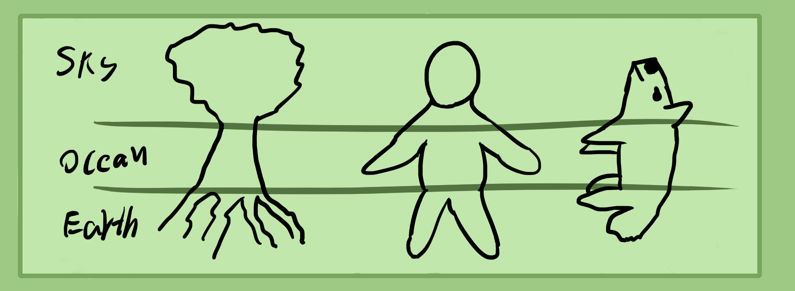
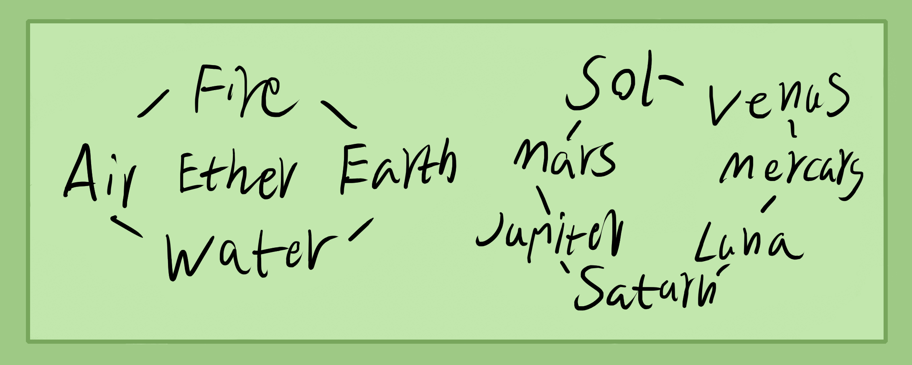

How do you know what kind of herb, mineral or animal type and part to use? Alchemists, traditional medicine folk, herbalists, etc usually create a system to categorize parts of materials and types.
Through through experience and developing your taste, sense of feeling, smell and sight, you can start to learn what different materials are best used for, how to make your own recipes and what way is best to refine and extract those ingredients.
A good way to begin is by taste testing very small amounts of each material. When you walk around outside, taste a tiny piece of all the grasses, herbs, barks, flowers, leaves, mushrooms, etc. Lick rocks and mineral powders, eat organ meats and learn to cook with more parts of animals.
When doing this, chew or suck on a tiny piece of material and spit it out if you feel any burning, pain or other bad sensations. That means its poisonous. You wont die from poison or get many harmful effects as long as it's a very small amount.
If you're not confident with your physical and energetic cultivation then you don't need to go around eating and trying all kinds of foreign materials.
Common effects can be a heating of the body, a cooling, dry feelings, moist feelings, stimulation, relaxing, clearing of the head or other areas, numbing, electrical feelings, intoxicating, healing, hunger reducing, digestion enhancing, etc, etc.
Learn to feel your body and see what part it effects, also learn to feel temperature and humidity within you and your energy channels. These are some ways to decipher what ingredients do.
Another way is to look at the parts used. Roots and bones are good for the legs and lower area of the body. Stems more for the mid section, leaves and flowers for the upper. Meat for muscle and animal organ for the corresponding organ.
Western Categorization
Above is a flow of elements to show the 5 elements and 7 planets. These are two basic ways to categorize ingredients. In Chinese medicine, they use meridians and their 5 element system.
Below is a list to explain the types of effects of the corresponding ingredients to elements.
Fire - Heating, causes sweating, stimulating, spicy, hot, pain causing, inflaming, causes aggression.
Air - Soothing, cooling, causes clearness and calmness, lightness.
Ether - Electrical sensations, psychedelic, enhances intellect, gives pure energy.
Water - Cooling, moistening, enhances fertility, calms, intoxicating, causes swelling.
Earth - Calms, stabilises, grounds, anti anxiety, depresses, cause sleep, dries.
Now for the 7 planets.
Jupiter - Stimulating, digestion aid, causes happiness, expands energy, grants luck.
Mars - Hot, stimulating, spicy, painful, inflaming, poisonous.
Sol - Nourishing, warming, soothing, filling, causes happiness, enhances social power, enlightens.
Venus - Aphrodisiacs, enhances pleasure, causes feelings of love, moistens, intoxicates.
Mercury - Mental/nerve stimulants, causes focus, aids with work, speeds you up.
Luna/moon - Stimulates pelvic, uterus, testicles, ovaries, causes visions and delusion, relaxing, calming, moistening.
Saturn - Drying, causes sleep, cold poisons, painkillers.
Ingrain these archetypal forces into your memory and study medical astrology or Chinese medicine further to understand more about categorizations and archetypes for alchemy.
General Recipes
I recommend looking up online for herbal recipes. Many are bad but if you want good recipes, try to look for books on Chinese medicine. Some of the very old martial arts manuals have amazing recipes.
Eventually you will learn to create your own. Also, I will include some of my good ones later on.